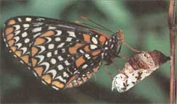
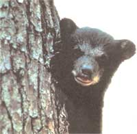
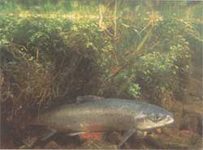
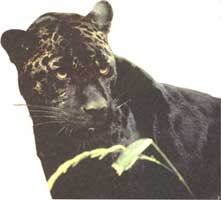
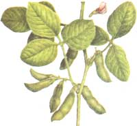

BITS & PIECES
Congress denies protection to 240 endangered species.
It was originally enacted to protect popular American animals like the bald eagle, the grizzly bear, and the blue whale. But now, owing to a congressionally mandated moratorium imposed in April of 1995, the Endangered Species List has gone a record amount of time without a new species listing. According to William Snape, legal director for the Washington, D.C.- based environmental protection group Defenders of Wildlife, the list is facing its own extinction.
"The Republican Congress wants to shut down the Endangered Species program." Says Snape, "They don't want any new species to come onto the list even if they deserve it." Snape describes the method by which the 104th Congress passed the moratorium as an act of legislative "trickery."
"What they did," says Snape, "was attach a completely unrelated rider onto a $5 billion defense spending bill. This technique is one that they have become quite masterful at. They stick all these very nefarious and tricky riders onto spending bills and budget bills that the president sometimes is forced to sign because there are a lot of other things riding upon it."
Since its implementation, the moratorium has prevented over 240 new species from being added to the Endangered Species List. "At this point the listings program for the Fish and Wildlife Service is entirely shut down," says Assistant Director of Ecological Services Jamie Clark.
Some of the animals that are facing virtually assured extinction are the jaguar (only a few Mexican populations remain), the Atlantic salmon (only 120 returned to their native rivers in Maine to spawn last year), the Florida black bear (less than 1,500 remain), and the Quino checkerspot butterfly (only six known populations are in existence). All of these species were proposed for listing by the Fish and Wildlife Service, but were denied because of the moratorium. There have been over 100 plant species proposed as well.
Ironically, this record-setting moratorium has taken place during the administration of revered wildlife conservationist Bruce Babbitt. Although some have criticized the secretary of the interior for not working harder to help lift the moratorium, Jamie Clark lauds Babbitt's efforts: "Secretary Babbitt has worked during this administration to insure an efficient implementation of these agencies. He has worked to insure that it provides fairness and flexibility, and has probably pushed the Fish and Wildlife Service further than we ever thought we could go. But Bruce Babbitt can't trump Congress. Bruce Babbitt didn't do this - Congress did."
Specifically, it was Senator Kay Bailey Hutchison (R-TX), who sponsored the moratorium amendment in 1995. A spokesperson for the senator's office states that Hutchison didn't design the moratorium to save taxpayers' money but rather to "strike a balance between the need to preserve species, and to protect private property rights of private land owners."
"My sense," says Defenders of Wildlife's William Snape, "is that the Endangered Species Act is sort of a red meat issue for the far right. Because the Endangered Species Act even dares to regulate private property, the far right has decided that it is going to make an example of the Endangered Species Act to the rest of the public."
When asked if the moratorium was expected to be lifted in the near future, Hutchison's office remarked, "Not by the end of this fiscal year."
Environmental experts suggest that the greatest hope for the reinstatement of the Endangered Species Act is the outspoken support of the public.
"I don't think that the majority of the congressional delegation understands that the American public is against extinction and that the American public supports species conservation," says the Fish and Wildlife Division's Jamie Clark.
For information on the current status of the Endangered Species Act contact the following:
Fish and Wildlife Division
(202)208- 5634
1849 C Street NW
Washington, D.C. 20240
William Snape
c/o The Defenders of Wildlife
1101 Fourteenth Street NW, #1400
Washington, D.C. 20005
(202)682-1331
Sen. Kay Bailey Hutchison
(202)224-5922
Senate Office Building
First and Constitution Avenue NE
Washington, D.C. 20005
The Brazil Nut Incident
They were light tan, small, and ovular, like conventional soybeans. But during a study sponsored by the Pioneer Hi-Bred International company, scientists at the University of Nebraska found these genetically engineered beans to be anything but ordinary. The transgenic soybeans,which Pioneer HiBred had infused with Brazil nut proteins, contained a potentially deadly allergen know as 2S Albumin.
"An allergen is a protein that people react to, and can cause reactions ranging from itching to upset stomach to death," said Dr. Marion Nestle, a molecular biologist and nutritionist with New York University. "I really thought that the possibility of transferring an allergen from one food to another was a remote one. I was floored when I heard about this."
The Brazil nut incident has re-ignited the ongoing debate over the Food and Drug Administration's labeling of genetically engineered foods. According to Dr. Margaret Mellon of the Union of Concerned Scientists in Washington, D.C., the FDA is disregarding the public's desire to have genetically engineered foods labeled.
"Almost every survey that has been done says that consumers would like to be told," says Mellon. "But consumer desires and fifty cents will get you about a cup of coffee at the FDA."
Dr. Mellon claims that although the FDA does have a policy of labeling biogenetically engineered foods, it is one that caters to the biotech companies themselves.
"The FDA policy relies heavily on the industry in making its decisions about premarket review and notification. Instead of making these decisions itself, the agency provides decision trees for industry. The policy relies almost entirely on the industry to make the right decisions. Since the FDA will not be aware of the full range of genetically engineered products, it will not be in a position to overrule these decisions."
Under the Food, Drug, and Cosmetics Act, all GRAS (Generally Recognized As Safe) substances won't require premarket government approval. The labeling of all other foods is the responsibility of the biotech companies themselves, a responsibility that Dr. Mellon feels won't be fulfilled unless it serves a company's needs.
"Companies," she says, "will voluntarily label engineered food only when the engineering has produced a trait with direct appeal or benefit to the consumer."
In the case of the allergenic soybeans, Pioneer Hi-Bred International acted quickly and responsibly in publicly reporting their findings.
"When we did the first work, we knew there was a potential for allergenicity, and that's why we sponsored the University of Nebraska study," says Pioneer Hi-Bred spokesman Tim Martin. "When we actually got confirmation that there was an allergen involved we decided to discontinue the program and look in other directions."
To date, only one biogenetically engineered food, the Flavr-Savr tomato, has been certified as marketable by the Food and Drug Administration. The Flavr-Savr, designed by Calgene Incorporated, is a tomato designed to stay fresh longer than conventional tomatoes. According to Calgene, the Flavr-Savr will be in stores starting January 1997. It will be labeled as a genetically modified food and will come with an information packet explaining the science of genetic food modification.
Most experts agree that the presence of modified foods in our stores, our restaurants, and our kitchens is imminent. According to John Henkel of the FDA consumer magazine, approximately 100 to 150 biogenetically engineered foods will be introduced within the next four years.
When asked how she predicts the Food and Drug Administration, university scientists, and major biotech companies will find a successful resolution to the current labeling situation, Dr. Nestle admits, "We don't really know."
Mother Nature's Shopping List
"It's easy to save the planet," says author Michael Shook, "you just have to know where to start."
According to Shook, the idea behind Mother Nature's Shopping List came to him after he'd read many of the other environmental books that were already out on the market.
"I read them," says Shook, "and I thought, 'these are good, but they're starting in the wrong place: Most of those books focused on recycling, and I wanted to go one step further and write about pre-cycling."
Mother Nature's Shopping List is a simple guide to making planet-conscious purchases at the supermarket, the hardware store, the clothing store, the automotive shop, the office supply center, the appliance store, the drug store, and the garden center. The book also has several special sections with titles like "Shopping for Baby," "Odds and Ends," and "Getting Involved."
"One of the nice things about the book," says Shook, "is that it tells you what companies are trying to become earth friendly, and which ones aren't. Also, it includes some great recipes for making nontoxic household products that make a small impact on both the planet and the pocketbook."
When he's not writing books, Shook pursues the life of a passionate Colorado outdoorsman, spending his days creating angling guides for river regions across the country, and his nights thinking up an assorted variety of new and different ways to save the world.
For more information on Mother Nature's Shopping List by Michael D. Shook (Citadel Press, 1995; $9.95 U.S./ $13.95 Canada), call Carol Publishers at 800-447-BOOK.
The following is a list of potential dangers inherent in the
production and distribution of genetically engineered foods. 1
NEW TOXICANTS : Many plants naturally produce a variety of compounds that maybe toxic when used for genetic engineering.
QUALITY : The nutritional quality of food may be diminished as a result of genetic engineering.
COMPOSITION : New substances may significantly alter the composition of commonly understood foods.
ALLERGENS : New proteins that cause allergic reactions may enter the food supply.
DIMINISHED EFFECTIVENESS: Antibiotic-resistant genes in genetically engineered food may diminish the effectiveness of some antibiotics inhuman and domestic animal diseases.
UNEXPECTED EFFECTS : Genetically engineered foods may cause effects that scientists cannot anticipate.
SIDE EFFECTS : The deletion of genes may have harmful side effects.
COUNTERFEIT FRESHNESS: Genetic engineering may produce "counterfeit freshness," giving the illusion that a food is healthier than it actually is.
FEED RISK : Engineered feed may pose risk to domestic animals.
WILDLIFE : Genetically engineered food crops may harm wildlife and change habitats.
UNCHARACTERIZED GENES : Uncharacterized genetic material and gene products may be added to foods.
1 From the National Wildlife Federation's "Information Packet on Genetically Engineered Food," August 28, 1992.
|
 Checkerspot butterfly: Merely six populations left. |
 Only 500 Florida black bears remain |
 Just 120 Atlantic Salmon returned to spawn in their native rivers last year |
|
 Almost all American jaguars are extinct. |
 |
|